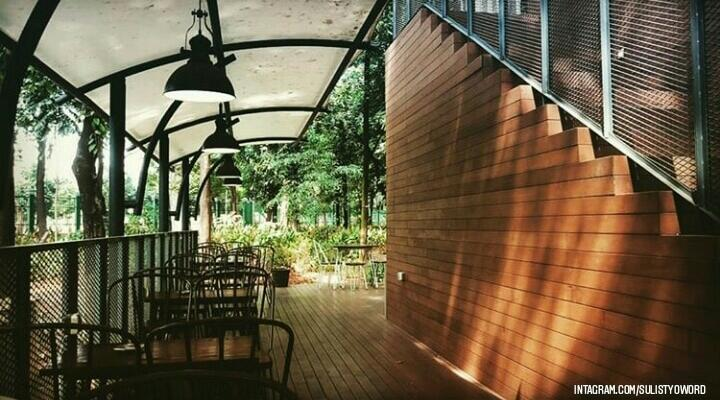
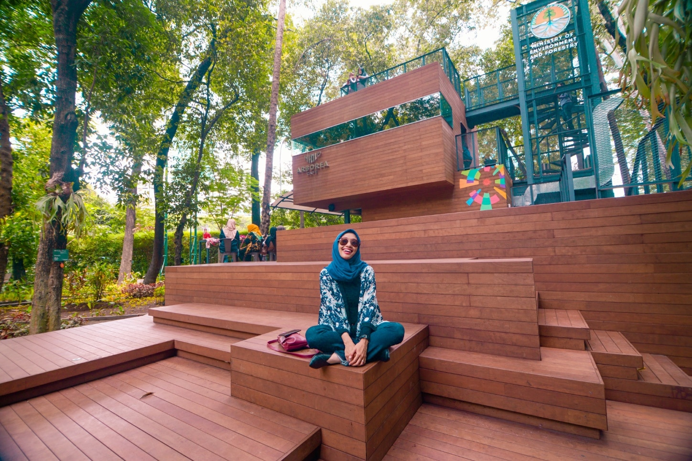
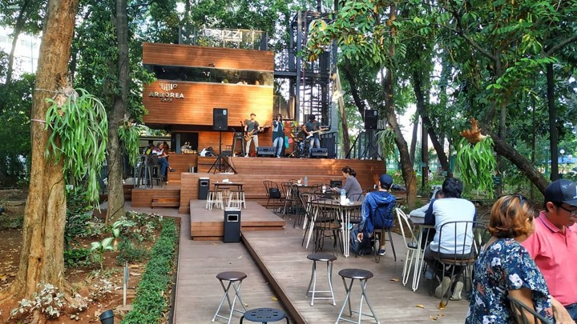

| Name | :Raditya Aryabudhi Ramadhan |
| NIM | :10122032 |
| Kelas | :IF-1 |
| Jurusan | :Teknik Informatika |
Di tengah padatnya aktivitas kota metropolitan, pasti kalian butuh tempat asik yang mampu meluruhkan kepenatan kalian kan? Wah, kalo di Ibu Kota ini sih pasti ngga susah ya untuk mencari tempat bersantai dan nongrong yang asik. Tapi, kali ini kita akan membicarakan kafe yang menghadirkan nuansa berbeda lho, sobat.
Arborea Cafe namanya. Di tengah Hutan Kota Arboretum Ir. Lukito Daryadi M. Sc yang memasuki Kawasan Manggala Wanabakti Kompleks Kementerian Lingkungan Hidup, kamu akan menemukan sebuah bangunan kayu dengan desain futuristik dan minimalis. Kafe outdoor ini semakin memikat pengunjung, khususnya generasi milenial karena keunikan letaknya yang berada di tengah hutan hingga menghadirkan nuansa alam.

Arborea Cafe diresmikan oleh Kementerian Lingkungan Hidup dan Kehutanan pada pertengahan bulan Agustus 2018 lalu di tengah euforia pelaksanaan Asean Games 2018 di Ibu Kota tercinta. Awalnya kafe ini didirikan sebagai sarana untuk bersantai bagi para atlet, wisatawan, dan media. Arborea Cafe ini sangat cozy dan instagramable banget, sobat. Kamu dapat dengan mudah menemukan angle cantik yang instagenic tentunya. Pengunjung bebas memilih menyantap menu pilihan di berbagai spot yang ada mulai dari lantai 1, 2, hingga rooftop. Bean Bag warna-warni pun melengkapi suasana senja sambil menyeruput kopi memandang aktivitas metropolitan dari lantai Arborea Cafe.
Tidak hanya suasana yang chill abis, menu yang tersedia di Arborea Cafe ini tak kalah menggugah selera lho. Pengunjung bisa memesan beraneka hidangan mulai dari berbagai jenis kopi, pastry, dimsum, bread, noodles and soup, hingga menu nusantara Indonesia. Jika kafe identik dengan menu ringan, Arborea Cafe menyajikan makanan berat yang menjadi menu spesial diantaranya Mie Aceh, Nasi Goreng Hijau dan masih banyak lagi.

Tidak hanya suasana yang chill abis, menu yang tersedia di Arborea Cafe ini tak kalah menggugah selera lho. Pengunjung bisa memesan beraneka hidangan mulai dari berbagai jenis kopi, pastry, dimsum, bread, noodles and soup, hingga menu nusantara Indonesia. Jika kafe identik dengan menu ringan, Arborea Cafe menyajikan makanan berat yang menjadi menu spesial diantaranya Mie Aceh, Nasi Goreng Hijau dan masih banyak lagi.

Hutan Arboretum sendiri merupakan kawasan yang ditumbuhi oleh berbagai macam vegetasi tumbuhan dan pepohonan dengan tujuan observasi, edukasi, dan tentunya wisata. Jadi, selain bisa menyantap menu spesial Arborea Cafe, pengunjung bisa sekaligus belajar tentang tumbuh-tumbuhan dan menikmati kesejukan alam dari hutan Arboretum ini, sobat. Tak sampai disitu, kawasan Manggala Wanabakti juga memiliki Museum Kehutanan yang lokasi nya cukup dekat dengan Arborea Cafe. Museum Kehutanan ini menyajikan berbagai koleksi diorama hutan mulai dari jenis-jenis potongan kayu, pepohonan rindang, hingga replika satwa liar khas Indonesia.

{kind=link}
{kind=link}